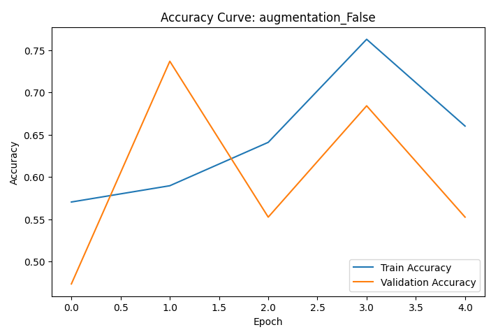
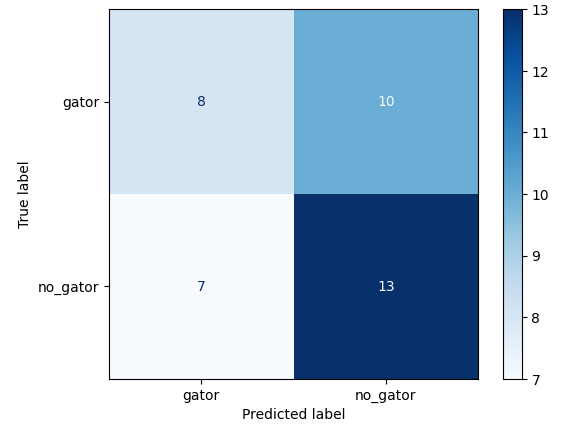
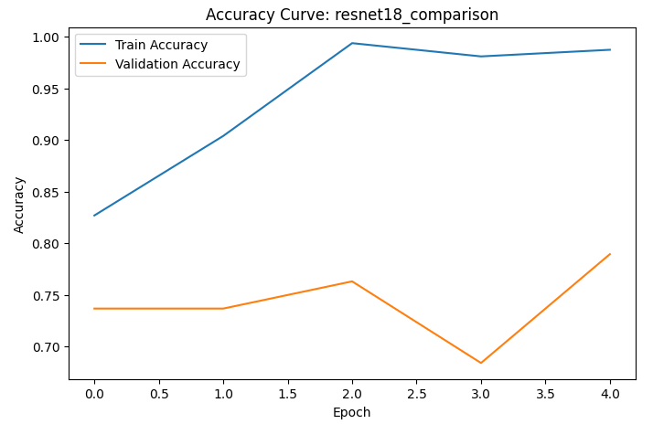
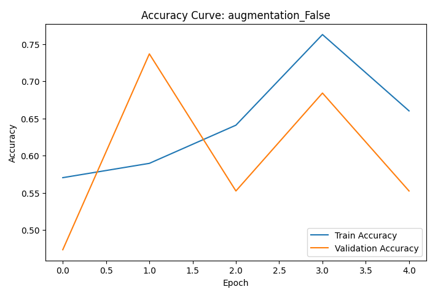
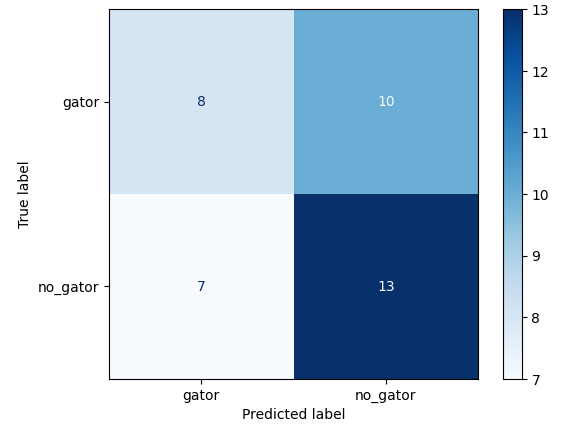
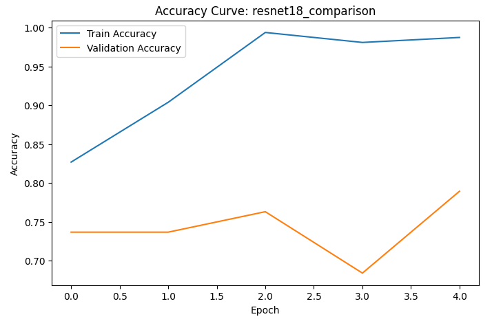
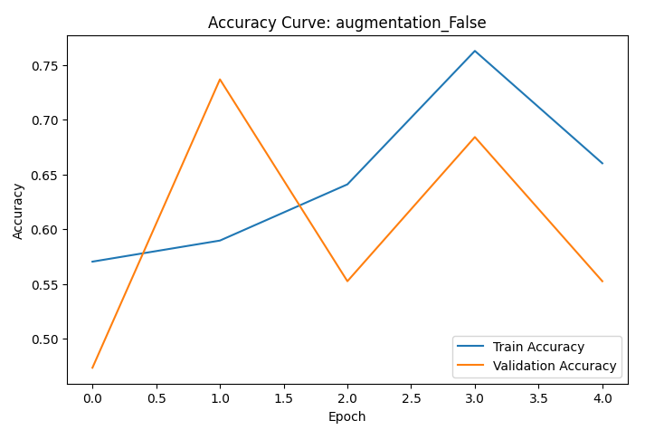
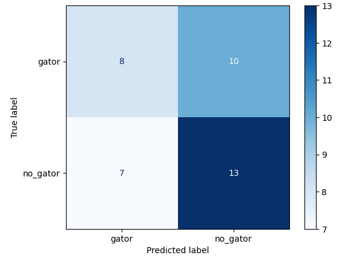
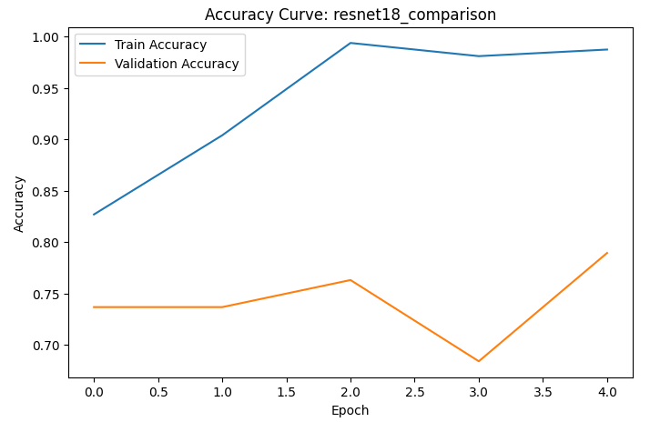

Visualizations
Place your Colab screenshots into the images folder and they will display here.
 





Real-Time Detection for Safer Communities
Watching the water, protecting lives.
Author: Ian Bush
Course: (replace with your course name)
Across the Southern United States, thousands of ponds, canals, and retention basins provide ideal habitats for alligators. These waterways are embedded in golf courses, parks, and residential neighborhoods—places where people routinely walk, jog, and recreate.
Alligators are masters of concealment, often remaining partially submerged or hidden during low-visibility conditions (especially at dusk and dawn). Their cryptic nature makes detection nearly impossible until it is too late.
Florida records numerous alligator attacks annually, with several resulting in fatalities. Many incidents occur within just 10 feet of water edges, where humans and alligators intersect most frequently.
Delayed recognition is the critical factor in preventable accidents: when an alligator is noticed too late, escape options disappear quickly.
Communities need a scalable, continuous, real-time detection system that never sleeps, never blinks, and monitors every water edge simultaneously with consistent vigilance.
ReptileRisk AI transforms passive water monitoring into continuous, active threat detection. The goal is to provide communities with automated vigilance that helps prevent dangerous encounters before they happen.
Place your Colab screenshots into the images folder and they will display here.



Insert your actual accuracy, precision, recall, and F1-score here.